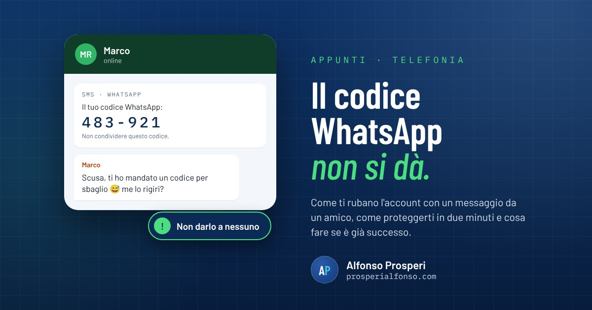

Ti arriva un SMS con un codice di WhatsApp che non hai chiesto. Un minuto dopo ti scrive un amico: "Scusa, ti ho mandato un codice per sbaglio, me lo rigiri?". Il messaggio arriva da un contatto che conosci, quindi viene naturale fidarsi. È proprio su questo che conta la truffa: se mandi quel codice, il tuo account WhatsApp passa a qualcun altro.
1. Come funziona
Il codice a 6 cifre serve a WhatsApp per verificare che il numero di telefono sia davvero tuo quando lo si attiva su un telefono nuovo. Il truffatore inserisce il tuo numero sul suo telefono e WhatsApp, come previsto, manda il codice a te. A lui manca solo quello, e te lo chiede.
Il dettaglio che inganna è che a chiedertelo non è uno sconosciuto: è un contatto della tua rubrica a cui l'account è già stato rubato allo stesso modo. È una catena: ogni account rubato serve per provare con tutti i suoi contatti.
Esiste anche una variante senza messaggi. Se il codice non viene letto, WhatsApp può offrire di comunicarlo con una chiamata vocale. I truffatori la fanno partire di notte, quando non rispondi: la chiamata finisce in segreteria e, se il PIN della segreteria è ancora quello di fabbrica, possono ascoltarla da remoto e leggere il codice. L'ufficio svizzero per la cibersicurezza l'ha descritta già nel 2023.
2. Cosa succede dopo
- Vieni disconnesso. WhatsApp sul tuo telefono smette di funzionare e ti chiede di verificare di nuovo il numero.
- Scrivono ai tuoi contatti a nome tuo. Chiedono il loro codice, per allungare la catena, oppure soldi con una scusa urgente: un bonifico, una ricarica, un pagamento da fare subito.
- Vedono gruppi e contatti, ma non le vecchie chat: quelle restano sul tuo telefono e nel tuo backup, protette dalla crittografia.
- Possono bloccarti fuori attivando loro la verifica in due passaggi, così recuperare l'account diventa più lento.
3. Come difenderti
La regola d'oro: il codice non si dà a nessuno. Né a un amico, né a un parente, né a chi dice di essere WhatsApp. Se ti arriva un codice che non hai chiesto, vuol dire che qualcuno sta provando a usare il tuo numero: ignoralo e non rispondere a chi te lo chiede. Se è davvero il tuo amico, chiamalo: ti accorgerai subito che non ti ha scritto lui.
Poi ci sono tre impostazioni da sistemare una volta per tutte, ci vogliono due minuti.
- Verifica in due passaggi. Su Android tocca i tre puntini in alto a destra, poi Impostazioni, Account, Verifica in due passaggi e Attiva. Su iPhone vai su Impostazioni in basso, poi Account e Verifica in due passaggi. Scegli un PIN (su alcune versioni dell'app ti viene chiesta una password) e aggiungi la tua email. Da quel momento, anche con il codice SMS, senza il tuo PIN non si entra. WhatsApp te lo chiederà ogni tanto, per non fartelo dimenticare.
- Passkey. Nello stesso menu Account, se la trovi, c'è la voce Passkey: ti permette di confermare l'accesso con l'impronta o il volto, come ho spiegato nell'articolo sulle passkey.
- Il PIN della segreteria. Se usi la segreteria telefonica, cambia il codice predefinito dall'app o dal sito del tuo operatore. Se non la usi, puoi anche disattivarla.
Ogni tanto dai anche un'occhiata a Impostazioni, Dispositivi collegati: se compare un computer o un browser che non riconosci, toccalo ed esci.
4. Se te l'hanno già rubato
Niente panico, nella maggior parte dei casi l'account si recupera. Bisogna però muoversi subito.
- Riprendi il numero. Apri WhatsApp sul tuo telefono, con la tua SIM, inserisci il tuo numero e chiedi il codice via SMS. Quando lo inserisci, chi sta usando il tuo account viene disconnesso. Non serve disinstallare l'app.
- Se ti chiede un PIN che non hai mai impostato, vuol dire che il truffatore ha attivato la verifica in due passaggi. Se avevi aggiunto la tua email, puoi reimpostarlo dal link che ti arriva. Altrimenti devi aspettare 7 giorni: poi toccando "PIN dimenticato?" puoi ripristinare l'account.
- Avvisa i tuoi contatti con un altro mezzo, un SMS o i social, chiedendo di non rispondere a richieste di soldi o codici arrivate a tuo nome.
- Segnala e denuncia. Dall'app puoi scrivere al supporto da Impostazioni, Aiuto. E se qualcuno ha perso dei soldi, fai la segnalazione alla Polizia Postale sul sito del Commissariato di PS online.
Una volta recuperato l'account, attiva subito la verifica in due passaggi: è il modo migliore perché non succeda di nuovo.
In breve
- Il codice di WhatsApp non si dà a nessuno, nemmeno a un amico.
- Un codice arrivato senza chiederlo è un tentativo di furto: ignoralo.
- Attiva la verifica in due passaggi con PIN ed email.
- Cambia il PIN di fabbrica della segreteria telefonica.
- Se ti rubano l'account, riprendi il numero con il codice SMS e avvisa i contatti.
WhatsApp di recente ha aggiunto parecchie novità, come quelle ai gruppi di cui ho parlato qui. Ma l'impostazione più utile resta questa: due minuti oggi evitano una brutta settimana domani.
Fonti
- Cyber Security 360, la truffa WhatsApp del codice a 6 cifre: come difendersi
- Ufficio federale della cibersicurezza (Svizzera), hacking di WhatsApp tramite la segreteria telefonica
- Centro assistenza WhatsApp, informazioni sulla verifica in due passaggi
- Centro assistenza WhatsApp, ho ricevuto un codice di verifica senza averlo richiesto
- Polizia Postale, Commissariato di PS online